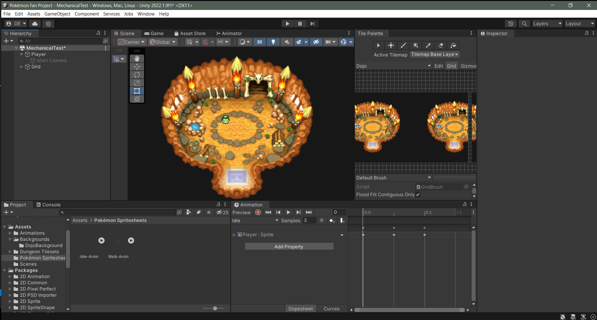

Pokémon Fan Project
Pokémon was a central part in my upbringing and forever holds a close place in my heart. One of my favorite games in the franchise was Pokémon Mystery Dungeon: Explorers of Time/Darkness/Sky, in which you play as a human who has been transformed into a Pokémon. Most Pokémon titles have the user play as a human Trainer who collects and uses Pokémon for battle. I personally loved the twist of being able to play as a Pokémon and develop emotional bonds with other Pokémon throughout the story of the game.
I want to create a private game where my friends and I can play in a similar style to the PMD games. However, I want it to be more like a fantasy MMO (except not massive). Players will be able to choose a starter (similar to choosing a class) and play as that Pokémon throughout the game. I have plans to include open fields with enemies to defeat and acquire EXP and loot, as well as bosses designed to be killed with more than one person. I have a great amount of experience playing online MMOS and RPG style games, bringing me an understanding on how to balance interactions in the game. Ask me about the game, and I will talk about my ideas for hours.
I use spritesheets for Pokémon from an public online repository where people publish their creations. I also learned I can take a gif file from recordings of the game to split into tilemaps and keep the original animations from some sections of the original game. After moving assets to Unity, I change the pixels per unit to 24 and slice the spritesheets. Unity2D also has an excellent feature called Rule Tile where I can apply rules to tiles in regards to connecting walls and floors. This makes painting a dungeon scene much easier as I can just click and drag and Unity will know which tile to place depending on adjacent tiles.
I plan to host this privately on an AWS server for my friends to play. After relocating to the Seattle area, I live far away from many of the people I care about. I want to use Pokémon to stay connected with them across country. Due to legality of trademark laws, I will not make this publicly available nor seek to profit from it in any way.